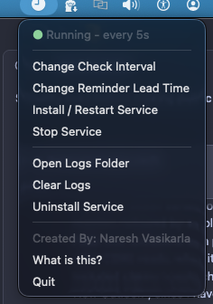
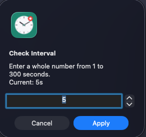
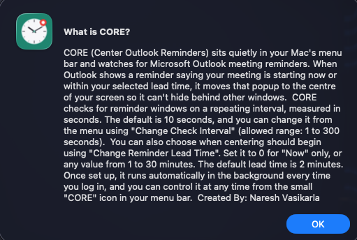

What it looks like



How it works
- Checks Outlook's reminder window every few seconds (you choose, default 10).
- When a reminder says Now, or is within your lead time (0–30 minutes, default 2), it centres the window on the screen it is on and sends a notification.
- Does nothing otherwise. No network connections, no calendar or email access.
Install
This app is not signed or notarized by Apple, so macOS will warn you the first time. This is expected. Only install it from the official GitHub release; the full source is public so you can read it first.
- Download
CORE.dmgfrom the latest release, open it, and drag CORE into Applications. - Right-click (or Control-click) CORE and choose Open, then click Open.
- If macOS still blocks it: System Settings → Privacy & Security → Open Anyway.
- Grant Accessibility permission when asked, so CORE can read the Outlook reminder window.
FAQ
Why does my Outlook reminder window appear behind other windows or on the wrong screen on Mac?
Outlook opens the reminder as a separate window that macOS can place behind your current app or on a different display. CORE detects that window and centres it on the screen it appears on.
Does CORE read my calendar or email?
No. It only reads the text of the Outlook "Reminder" window through the macOS Accessibility API, to see whether a meeting is starting soon. It makes no network connections.
Is it free?
Yes, for personal, non-commercial use. See the license.
Does it work on Windows?
No, and it isn't needed there. Windows already has this behaviour built in.
How do I uninstall it?
Choose Uninstall Service from the CORE menu, then delete CORE from Applications.